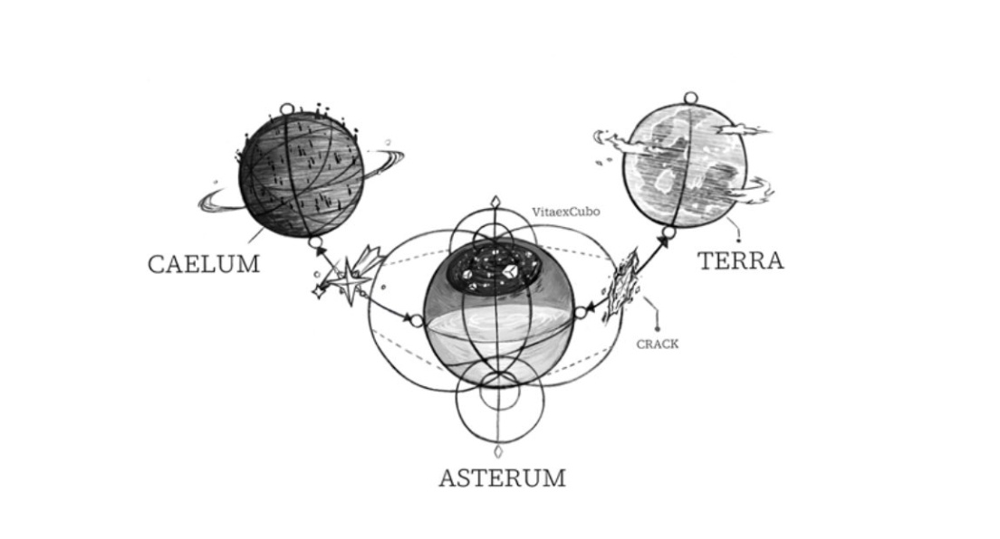

Members
YEJUN


NOAH


BAMBY


EUNHO


HAMIN


PLAVE is a digital KPOP boy group that exists beyond reality, blending music, Technology, and immersive storytelling.
Caelum is the world in which the members—Bamby, Noah, Yejun, Eunho—live. It's a virtual world powered by the creators from Terra (Earth), allowing the members of Plave to enter the realm of Asterum and interact with the real world.
All characters created on Earth exist in the form of a cube, in the space of life (or what we know as a VitaexCub), which is the sky of Asterum. If a certain character receives enough love in Terra due to the releases or serialization of webtoons, the character's cube splits, and a meteor is released, falling onto Caelum, where the character comes to life in a Virtual World. If or when a character who is living in Caleum loses their popularity, they disappear and return to the form of a cube and then reside back in Asterum. [Revealed in Eunho's Birthday Kit QR code] 
In the "Wait for You" MV, we see Yejun living in a place that looks like a Laboratory, Noah residing in a Magical Kingdom, and Bamby and Eunho seen in a cyber city, isolated with no one around. Later, we see in [Bamby's Birthday Kit QR code] a diary entry where the members of Plave's are revealed to be originally from 3 different webtoons that were discontinued, meaning they're on limited time before returning to their cube for.